Draw Camera's Outline (Like Clip Studio Paint's Camera Path)
To Render it, watch Render Grease Pencil Keyframes video.
Render Grease Pencil Keyframes (For exporting Cels)
- 1. Select a Layer
- 2. Choose a Render Path and name your Cel
- 3. Click Render GPencil Keyframes
To Render Specific Cels , You may disable some Objects in Render also hide unwanted Layers before Rendering.
The video below shows how to Render GPencil Keyframes , Set output to PNG , Set Background to Transparent and Render a Single Cel using F12.
Flip Camera Horizontally/Vertically and Rotate Camera Slider
Button to Flip Camera Horizontally/Vertically and Rotate Camera Slider with a button to Reset Camera's Rotation.
Insert a Grease Pencil Text
- 1. Select a Layer
- 2. Choose a Material
- 3. Click Add Text button in the Tools Panel
- 4. You can Import Fonts by clicking (+) button
- 5. Select a Font by clicking the dropdown next to that (+) button
- 6. You can type the text directly in the Viewport or using the Text Field below the (+) button
- 7. To edit the Text using Text Field, click (✅) button
- 8. Click Apply Text button to apply it to your previously selected Grease Pencil Layer
- 9. You may need to manually select the Text's holes and change it's Material to Holdout
Move Grease Pencil Object to Front/Back
Moves Grease Pencil Object or other Object type to Front/Back.
(To change the order in the list you have to manually rename the Grease Pencil Object)
Quickly Enable/Disable opacity for Images as Planes, References and Grease Pencil
You can change the Default Opacity in Preferences.
Normalize Strokes size and opacity to current brush settings
Normalize Strokes size and opacity to current brush settings instead of Blender's slider popup
Link All & Unlink All Grease Pencil Materials
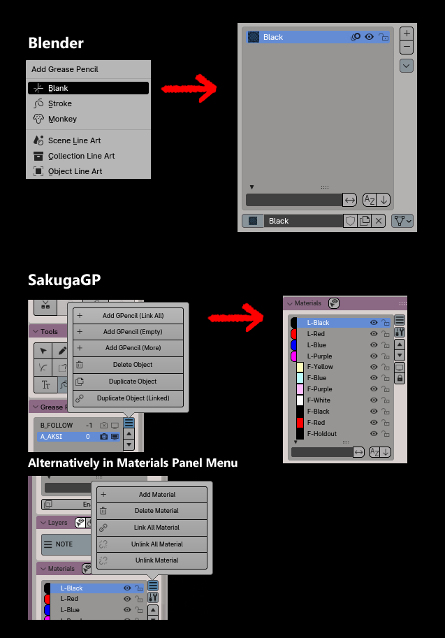
Increase/Decrease Frame Steps Button
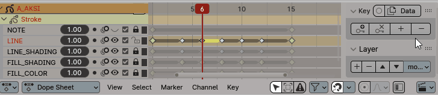
Set Start and Set End the the playback range to current frame
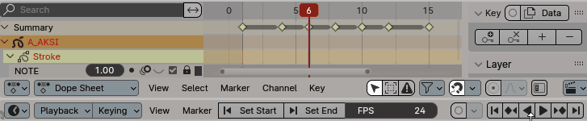
Add/Change/Remove Object's Action without going to Action Editor
- Creating Action will Automatically enable Fake User and Delete Action will also deletes that Action's Blender Data.
- To change Object's Action simply search using that Search Text Field above

Touch Buttons for Touch Screen Users
Undo/Redo and Timeline Navigation Buttons are disabled by default, go to Preferences to Enable it.

Toggle Lock Viewport's Rotation
To disable Viewport's Rotation , so you wont accidentally rotating it while moving the Viewport.
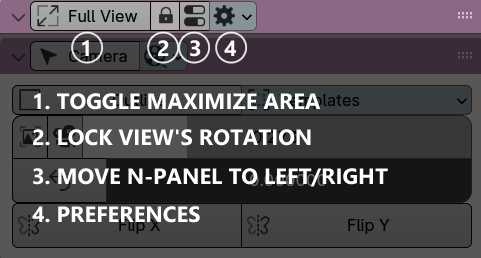
Making Anime Template
Installing Camera Overscan Addon and Enable Import Images as Planes Addon
-
First, Enable Import Images as Planes Addon in Blender Preferences > Add-ons and search for "Import Images as Planes"
-
Second, you'll need to download and install this Camera Overscan Addon
- Go to Output Properties and Enable Overscan
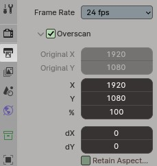
Checking Camera Overscan Addon
-
Go to Camera Panel, Click Templates popover and then click Check Addon
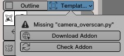
-
If you have installed Camera Ovescan, Templates popover will look like this :
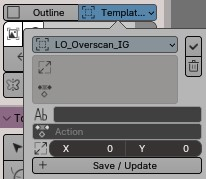
Creating Overscan Template and Import Anime Layout Template
-
Check your LO Image Template's dimensions in the File Explorer
If you don't have the Template, download here
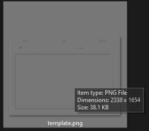
-
Go back to Templates popover and change the Dimension's value
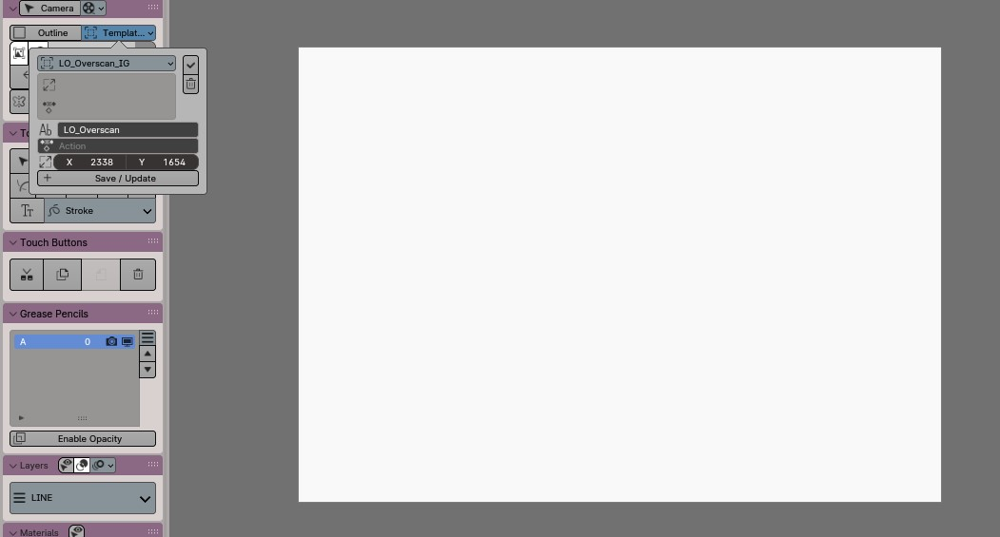
-
Then name it "LO_Overscan" or something else, This Template will be used for rendering the Cels
-
Select your Camera Object and Add a new Action, name it "cam_overscan"
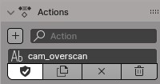
-
Go to the first frame and insert a keyframe
-
Go back to Templates popover and select that "cam_overscan" Action
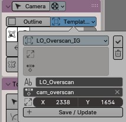
-
Click Save/Update
-
Go to File > Import > Images as Planes and find your LO Image Template
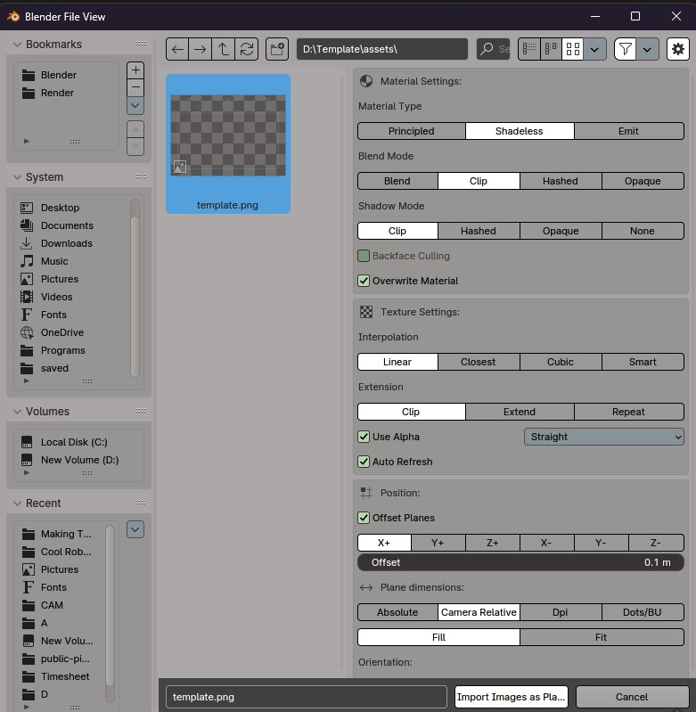
-
Find Plane Dimensions and Set it to Camera Relative then click Import Images as Planes
Creating Camera Focus Template
-
Same as like Creating Overscan Template but change the Dimension to 16:9 (example:1920x1080)
-
And Create a new action for the Camera , name it "cam_normal"
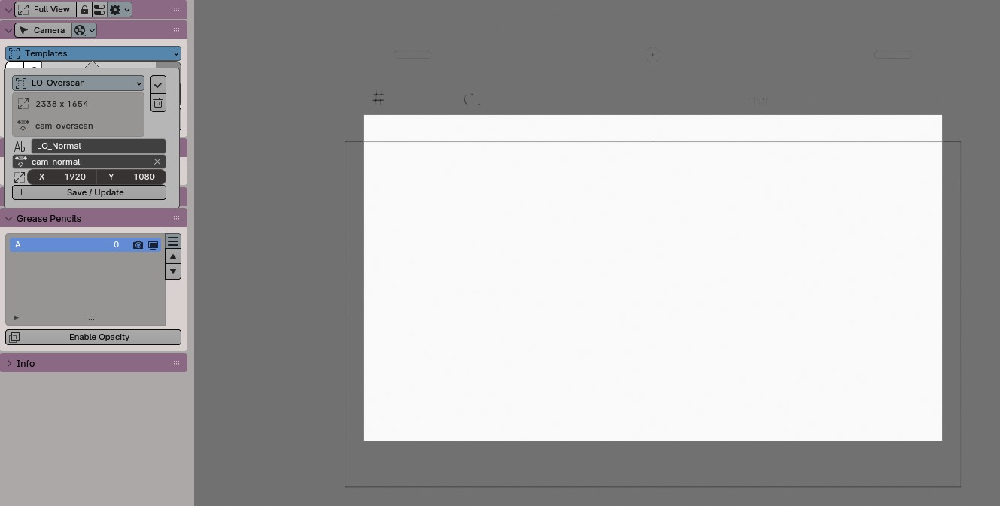
-
Move the Camera's Location to fit to your LO Image Template's Camera Frame
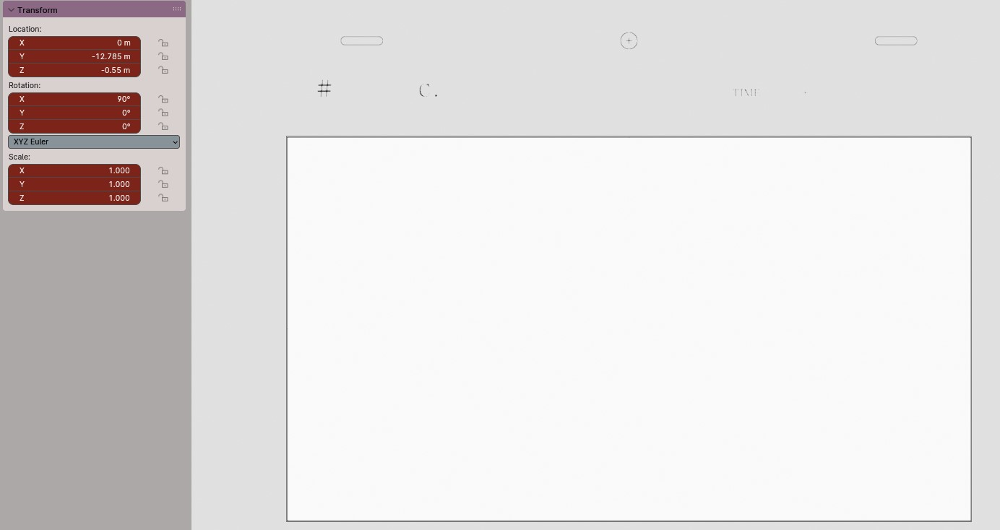
-
Go to the first frame and insert a keyframe
-
Go back to Go back to Templates popover and click Save/Update
Done!
Now it should work like this :
Templates are saved in the location below :
| JSON PATH : |
C:\Users\[CURRENT_USER]\AppData\Roaming\Blender Foundation\Blender\[BLENDER_VERSION]\scripts\addons\sakugagp\assets\templates.json |
⚠️ Before you Installing a new update for SakugaGP. Be sure to backup that JSON file first. unless it'll get overwrited by a default JSON Template.
|